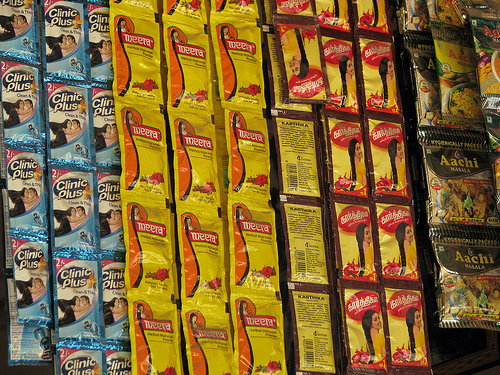

Cavin Kare is a Consumer-Packaged Goods ( CPG/FMCG ) company which is into personal care, food and beverages and hair care products. It is the house of famous Indian brands such as Chick, Meera, Cavin’s, Indica and many more. Cavin Kare revolutionized the sachet packaging industry to make it affordable for the low-income population in India who had limited purchasing power for bigger SKU’s.
Picture taken from internet.
As a summer intern I was in the general trade marketing team which handled sales of the personal care segment.
Other than advertisements which targeted mass audience in an FMCG industry, having a salesperson present in retail stores to promote brand can help increase brand awareness and sales by providing customers with information about the product and highlighting its benefits. This has been a practice followed by top FMCG organizations like HUL, P&G and many other in India. Cavin Kare started this as a pilot project to enforce its sales team in the retail stores of Bangalore & Hyderabad, to test the revenue difference. After noticing a considerate difference in the revenues of the stores served by salesman, they started to expand this project to the remaining states
After visiting outlets in Chennai, have identified that salesman had problems remembering SKU’s and pricing as the category offered at least 150 SKU’s. To impact visibility, accessibility and influence sales, shelf space is important for an FMCG organizations. CavinKare used to pay standard fee to any retailer for the shelf space, this gave them an edge in few outlets, while losing it to competitors in other outlets.